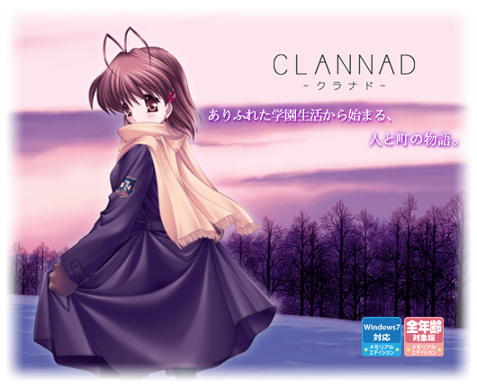
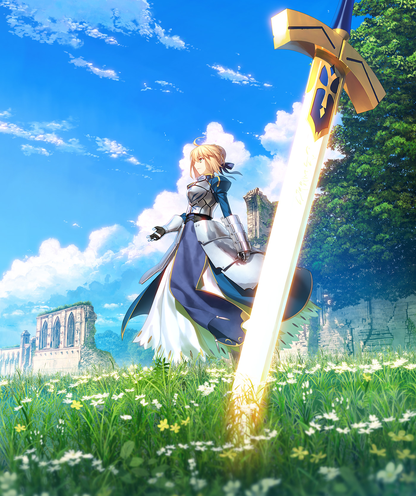
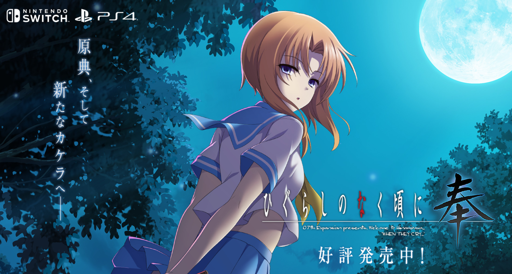
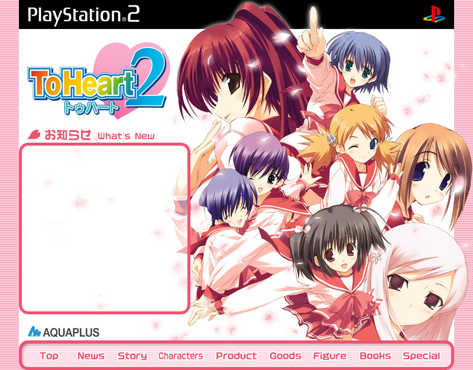
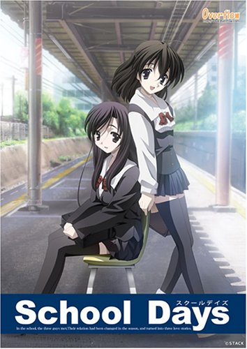
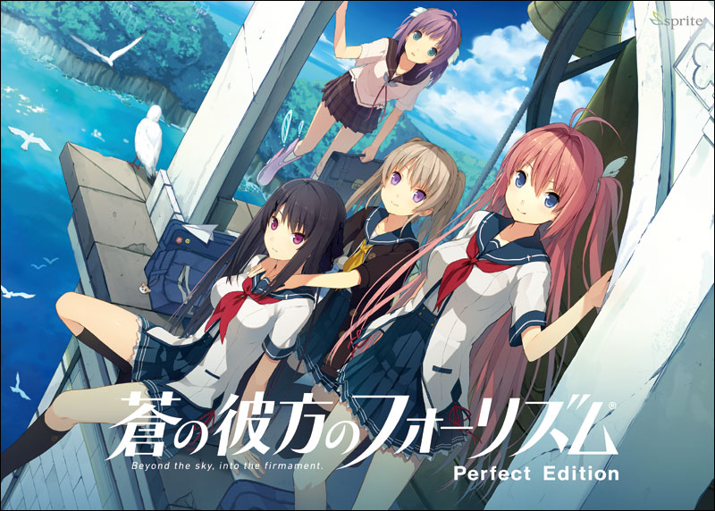
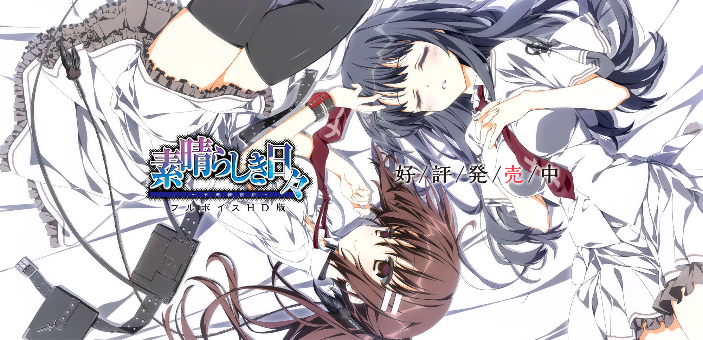

注)この記事は筆者が様々な話の紆余曲折を経て、最終的にひたすらノベルゲームというメディアの素晴らしさを語るものです。予めご了承ください。
こんにちは。一回生の春夏冬です。
という声が聞こえてきそうですが、どうか抑えてください。
難読な苗字と比べれば、この名前は至って単純です。「春夏秋冬」から「秋」だけが抜けているので、「あきなし」と読みます（※『あきない』という読み方もあります）。
まあ実際先輩に間違えられたりすることはあるのですが、そこはそれ。
ソフトメディア研究会の先輩に、小鳥遊、という文字を使われている先輩がいるのですが、この漢字の羅列は「小鳥が遊べる場所」イコール「鷹（天敵）がいない場所」ということで「たかなし」と読むので、少しややこしいかと思います。
さて、僅かばかり珍しい苗字の読み方と由来について知っていただけたことですし、本題に入っていこうと思います。
改めて、一回生の春夏冬です。ソフトメディア研究会アドベントカレンダー、五日目を担当します。
少々長い記事になっているかもしれませんが、よろしければお付き合いください。数日かけてじっくり読んでいただけると、当方感激でございます。
記事を構成するにあたって、内容を三つに章分けしています。
個々の章は内容として独立しているとは言い難いですが、各章とも個別に読んでも面白いと思っていただける記事を目指しております。
時間のない方はどれか一章だけでも、気になったものがあれば覗いてみていただけると幸いです。
以上が本記事の構成です（三章は記事のまとめになります）。それではよろしくお願い致します。
それではまず、記事全体の導入としてメディアの違いを考察させていただきます。
まずは私たちにとって最も身近な媒体である媒体――そう、漫画から話しましょう。
漫画は多くの場合、続刊が求められ、話を作ると同時に絵も描かなければならないため、一巻あたりの話は少なめになります。そのため人気の漫画は巻数が二桁に上ることも珍しくありません。中には三桁にまで突入する作品もあります。
この媒体（メディア）は物語に常に絵で描写がある、というのが、みなさんご存じの最大の特徴です。
そして、特徴はまだあります。性質上、漫画というのは壮大な物語の場合、一冊で完結することが難しいのです。
特に人気のバトル漫画が多く連載されている漫画雑誌「少年ジャンプ（集英社）」の作品では、一つの長編ストーリーが十巻近くにわたって展開されるというのも珍しくありません。しかしこれによって読者は巻末――「引き」と呼ばれる次の巻への興味を引く演出によって、そのシリーズを次々と買っていきます。
この記事を読んでいる皆さんも、つい次の巻に手が伸びてしまってお金を使いすぎてしまった、という経験があるのではないでしょうか？
また、漫画はその性格上、話が小分けされやすいコメディやラブコメといったジャンルを展開しやすい媒体でもあります。特に最近は日常系と呼ばれる、小さな話がいくつも展開されるジャンルが流行っていますね。
次に、小説について考えていきます。この媒体もかなり身近なものですね。漫画より小説のほうが身近に感じる、という方もいらっしゃると思います。
この記事を読んでいる方はおそらく、ライトノベルにも馴染みのある方が多いのではないかと思います。そのため、ここではライトノベルを例にとっていこうと思います。当サークルの印象から察している方も多いでしょうが、少なくとも筆者はライトノベルのほうが一般の小説よりもよく読みます。
さて、小説は続刊するのが当たり前である漫画と違い、一巻完結が常に求められます。これはたいてい続刊を前提にしているライトノベルでも同様です。
この性質上、一冊あたりの満足度はライトノベルが勝るといえます。しかし一冊ごとに明確な起承転結と、加えてなにか読者に続きを読みたいと思わせるような変化が必要になります。
それは主人公の成長であったり、成功であったり、あるいは挫折や失敗であるかもしれません。しかしこういった物語ごとのテーマが一冊の中になければ、「単調」「地味」といった評価を受けてしまうことになります。
また、小説は絵がない分、全ての物語を文章一本で表現しなければなりません。ライトノベルの場合は挿絵がありますが、それでも話のほとんどを文章で表現することには変わらないでしょう。
このため、絵を描いてしまえば読者に簡単に伝わるような日常の風景も、小説では「日常の風景だ」と感じる程度に文章で描写しなければなりません。都会であればビルの並びであったり、商店街なら道の広さや店の看板などの素材感、夜の飲食店から漏れる光と活気。そういった諸々です。
小説は漫画と違い、話を作って文章を書くだけだから楽そう、という印象を持っている方もいらっしゃるかと思います。けれど小説にも大きな生みの苦しみがあるのだということを少しは伝えられているといいな、と思います。
そして満を持して三つ目、ノベルゲームについてです。この媒体に関しては「よく知らない」「聞いたことしかない」「そもそも知らない」という方もいらっしゃると思いますので、まず概要から説明させていただきます。
ノベルゲームというのは、サウンドノベルとも言いまして、ゲームのプレイ画面に表示されるテキストを読み進めていくなかでＢＧＭが流れたり、企業のものになるとキャラクターの台詞に声がついたりするものです。新感覚ノベル、という表現が、ノベルゲームを知らない方への説明としては最も明解かと思います。
ゲームを日頃から好んでプレイしている、という方は「ああ、ゲームのシナリオパートみたいな感じか」となんとなくイメージしていただけると思います。
ノベルゲームを構成する要素としては、大まかに以下の四つになります。
一体どこで見たのか気になる方は、一度記事を閉じていただいて、我らがソフトメディア研究会のホームページを見てみてください。きっと何か発見があることでしょう。
閑話休題。
というわけで、一般的にノベルゲームは絵と音楽がついた小説、という認識になります。実はもっとわかりやすい例えが一つあるのですが、筆者はこの例え方に憎悪すら覚える次第でありまして、
ともかく、その例えは江戸の敵を長崎で討つ、波瀾万丈の第二章で取り上げさせていただきます。
第一章は「メディアの違い」についてのたいへん清らかな記事となっておりますゆえ、何卒ご容赦ください。
二度の脱線を経て何を話していたのか忘れてしまったという方。安心してください。ここからが本題です。
さて、概要を理解していただけたつもりのノベルゲームですが、漫画や小説とは大きな違いが、この媒体にはあります。
それは「必ず物語が一本の中で全て完結する」というものです。
これまで漫画と小説について考察、説明してきましたが、この二つは違いはあれど「続刊する」ということに変わりはありませんでした。
しかし、ノベルゲームはそうではありません。漫画や小説より遥かに値段単価の高いものではありますが、練り込まれたストーリー、一つの世界を凝縮したそのボリューム、そしてテキスト、イラスト、音楽の三つが合わさっているがゆえの単純な情報の多さ。
これは言わば、ポ〇キーとト〇ポの比較に他なりません。
すなわち、皆さんご存じの人類の格言――
何を言っているのか理解できなかった方。申し訳ございません。どうかここで記事を閉じないで下さい。
ちなみに、筆者はポッ〇ー派でも〇ッポ派でもありません。
およそ漫画や小説の１０～１５倍ほどになるメディアではありますが、ノベルゲームの満足感は決してそれらに引けをとるものではありません。中には発売から時が経っても人々の心に残る名作が、業界には少なからず存在するのです。
そして何より、ノベルゲームの目玉ともいうべき特徴が「マルチエンディング」と呼ばれるものです。
ノベルゲームというジャンルの登場初期には浸透していなかったという話も聞きますが、今となっては主流の「マルチエンディング」。これは読んで字のごとく、一つの世界に複数の結末――エンディングが存在する、というものです。
皆さん、漫画や小説を読んでいて思ったことはありませんか？
「このキャラクターには死んでほしくなかった」だとか、「このキャラクターたちの絡みが見てみたかった」だとか、あるいは恋愛ものなら「別のヒロインと結ばれる話も見たかった」なんてことも。きっと、誰しもが一度は考えたことがあると思います。
そういった、不完全燃焼とはまた違った物足りなさ。それを感じさせないギミックこそ、この「マルチエンディング」という手法なのです。
具体的には、物語の中に主人公が選択を迫られる場面があり、プレイヤー側がその選択を選べます。時には思いもつかないようなバッドエンドや、奇想天外な隠しルートや裏ルートと呼ばれるものへ突入したりもします。
ただ読み進めるだけではなく、自分の選択によって物語展開が大きく変化する。そういったリアルさを含んだ演出も、このメディアの特徴といえますね。
最近はノベルゲーム以外でも、複数の結末を用意しているゲームが存在します。そういったゲームをプレイしたことがある方は、想像もつきやすいのではないかと思います。
既にかなり長くなってしまっている気がしてなりませんが、以上が第一章となります。
漫画と小説、そしてノベルゲーム（同じくストーリーを取り扱うメディアであるアニメやドラマは原作があったりなかったり、尺がまちまちだったりと複雑なので割愛しました）。
物語を深く扱うこれらのメディアのそれぞれの特徴、違いを少しでも理解、または考えていただけたなら幸いです。
この章ではまず初めに、先ほど宣言したことを実行しなければなりません。
ということで、ノベルゲームがどういった蔑称で呼ばれているのかを紹介したいと思います。
とはいえ皆さん、サブタイトルからもうお察しのことと思います。
そうです。ノベルゲームはイラストを見ながら音声のついたテキストを読む、というスタイルから、こうも呼ばれているのです。
「紙芝居」と。
この言葉を誰もが蔑称として認識しているかどうかはわかりませんが、おそらくそう思っている方が多いはずです。
日頃であればノベルゲームに対してこの言葉が使われても怒り狂うことはないでしょう。しかし、ここは日常の喧騒から離れた記事でありますから、筆者は存分に狂化し、怒り狂う所存であります。
そしてこの言葉の何が最もタチがわるいのか。それはつまり、
ということに他なりません。事実、筆者は初めてこの言葉をノベルゲームの耳にしたとき、なるほど、と感心しました。そして乱心しました。
そんなわけでこの章では、ノベルゲームの良さをもっと深く知っていただくべく、紙芝居とノベルゲームを比較していく――ことを皆さんが求めておられるはずもないので、実際のゲーム画像などを交えながら話していきたいと思います。
※著作権云々の話を華麗に回避するため、参照 : 全てゲーム公式サイトからの引用となります。興味のある方はＵＲＬを併記しておきますので、よろしければそちらもご覧ください。
さて、一章では漫画と小説、ノベルゲームのメディアとしての違いを説明しましたが、中にはこう思われている方もいらっしゃると思います。
「メディアとしての違いは分かったけど、やっぱり漫画とかのほうがノベルゲームより面白いんじゃないの？ いや、絶対に面白いはず！」
と、このように。
ですからまず、本当にノベルゲームは面白いのか？ ということを掘り下げていきたいと思います。
差し当たって、まずはこちらの画像をご覧ください。
「CLANNAD」 [1] 参照 : http://key.visualarts.gr.jp/
これは「Key」というゲームブランドから発売されている、恋愛ADV（ADVというのはアドベンチャーの略で、プレイヤーの行動によって物語が進行していくジャンルを指します）というジャンルの作品の一つです。
アニメが好きな方は、名前くらいなら知っているのではないでしょうか。あるいはアニメを見たことがある方は、その内容をしみじみと思い出しているかもしれません。
この作品「CLANNAD」はノベルゲーム業界でも特に人々に感動を与えて反響を呼んだ名作です。あらすじについては本記事では割愛させていただきますが、「これまで見た作品の中で一番良かった」という声を日頃から多く耳にする作品でもあります。
例に漏れず、筆者も大ファンの一人です。
大事なことなので二回言いました。
この作品は恋愛シミュレーションというジャンルでありながら、「家族愛」「死」という二つの大きなテーマを抱えています。しかしこの深く重いテーマによって、そしてそれを最大に表現するイラストや音楽といったゲームの演出によって、この作品は非常に深みがあり、また考えさせられる物語になっています。
主人公が高校生のときから始まり、社会人になってからのことも描いているのが、深みのポイントの一つかもしれません。また決まった尺で完全完結するからこそ、尺の中でそのテーマを活かしきれるのだと思います。
次に、こちらの画像をご覧ください。
「Fate/stay night」 [2] 参照 : https://fate-15th.com/
この作品は派生作品も多く、シリーズとして非常に有名なので知っている方は多いかと思います。「TYPE-MOON」から発売されている「Fate/stay night」という作品です。ちなみにこの「Fate/stay night」は発売十五周年を迎えたとのことで、参照 : 記念サイトから取ってきました。
ジャンルとしては恋愛ADVですが、この作品は独特の世界観とバトルを織り込んだ深い物語が魅力ですので、単純なADV作品の例として挙げさせていただきます。
物語としては、史実や伝承に登場する様々な英雄が現代に降り立ち、争うというものです。英雄を召喚する現代の人間との人間関係や、英雄について深く掘り下げるシナリオが特徴であり、人気の理由だと思います。
また、作中で特に鍵となる「宝具」と呼ばれる強力な武器のかっこよく、スタイリッシュな演出も人気の理由でしょう。
この作品には他にも語りつくせないほど多くの魅力があるのですが、それはぜひ本編をプレイして確かめてみてください。すでに本編を知っているという方は、内容をうまく紹介できないことをどうかご容赦ください。
という言葉は筆者には当てはまりませんので、聞き流すことにいたします。何を言っているのかわからないよ、という方はどうぞそのままの清らかな心で記事を読み進めてください。
ともかく、こういったバトルメインの名作もノベルゲームには存在します。こちらも世間では非常に高い評価を得ており、ファンの多い作品です。
さて、どんどんまいりましょう。今度紹介するのはこの作品です。
「ひぐらしのなく頃に」 [3] 参照 : http://www.entergram.co.jp/higurashihou/
こちらはつい筆者が気に入ったイラストを移植版ゲームの公式サイトからスクリーンショットで引っ張ってきてしまいましたが、「07th Expansion」から発売されている「ひぐらしのなく頃に」という作品です。
これも名前を知っている方は多いと思います。
界隈では非常に有名なホラーサスペンスADVというジャンルのノベルゲームで、主人公の行動によって様々な惨劇に見舞われます。しかもサスペンスということで、その惨劇に明確な過程、理由があり、主人公の行動によってホラーを回避し、問題を解決できる、という要素もあります。
この作品が人気なのはホラー演出の迫力以外にも、そういったところに魅力があると思います。
筆者はこの記事の執筆時からおよそ六年前に初めてこの作品に触れ、眠らなかった（眠れなかった）経験があります。なんせ、眠ったらほぼ間違いなく悪夢として現れるので。夢というのは記憶の整理をしている、という話がありますが、印象に残った記憶ほど夢に現れてしまう、というのは難儀なものです。
そろそろ二章も折り返しです。紹介する作品はあと三つになります。
「To Heart2」 [4] 参照 : https://aquaplus.jp/th2/
こちらは「Leaf」から発売されている恋愛ADV作品「To Heart2」という作品です。
いわゆる美少女ゲームのイメージそのままの作品といえます。美少女ゲーム、と聞いてぴんと来なかった方は、ギャルゲーと聞けばイメージが浮かぶのではないでしょうか。それでもイメージの浮かばなかった方。どうぞそのまま清らかな心で（以下略）。
最初に紹介した「CLANNAD」とは違い、同じ恋愛ADVでもこちらの作品は恋愛に特に重きを置いた作品になっています。
余談ですが、恋愛ADV、すなわち美少女ゲームは二つの種類に大別することができます。
「泣きゲー」と「萌えゲー」です。
この分け方については、界隈に非常に精通していらっしゃる方は疑問を挟まれるかもしれません。それを言うなら「泣きゲー」と「〇きゲー（自主規制）」だろうと。
ですが、この表現は18歳未満の方も少なからず読むだろう本記事では控えさせていただきたく、上記の表現をいたしておりますので、身を裂く思いであろうことは重々承知ですが、何卒、なにとぞご了承ください。
ともかく、「泣きゲー」と「萌えゲー」というふうに、美少女ゲームは二種類に区別されます。「泣きゲー」というのは、その名の通り、プレイヤーを感動させる要素を少なからず含んだ作品を指します。逆に「萌えゲー」は恋愛パートに重きを置いた作品を指します。
つまるところ、泣けるか泣けないか、というのが簡単な基準になります。先ほど紹介した「CLANNAD」は前者、今紹介している「To Heart2」は後者に寄っているといえます。
以上、閑話休題。
「To Heart2」の魅力は何といっても、キャラクターの豊富さ、そして萌えに囚われない古き良き深みのあるストーリー。萌えゲーでありながら、つい感動してしまうようなシーンも潜んでいるのが、この作品が名作たる特徴だと思います。さらにこの作品には隠しヒロインが存在し、複数のヒロインの物語を見ないとプレイできないシナリオが存在します。
こういったギミックも、ノベルゲームの醍醐味といえるでしょう。この作品はさらに、シナリオが分岐するルートの数も通常が4、5人ほどであるのに対し9（初めに出たソフトは8）という大ボリュームになっています。
次の作品は筆者の個人的な都合上、少し説明が短くなってしまいます。気になる、という方はご自分で調べられるのがよろしいかと存じます。
「School Days」 [5] 参照 : https://0verflow.com/products.html （18歳未満の方の閲覧はご遠慮ください）
※こちらの作品に関しては、例外的にアニメ公式サイトのＵＲＬを紹介させていただきます。何卒ご了承ください。
さて、これまで世間に広く愛される普及の名作（迷作）と呼ぶべき作品を紹介してきましたが、最後に筆者の特に好きなブランドから一つ、作品を紹介したいと思います。
「蒼の彼方のフォーリズム」 [6] 参照 : https://aokana.net/
「sprite」から発売されている恋愛ADV「蒼の彼方のフォーリズム」です。
この作品の特徴は、なんといってもこのゲーム独特にして最大の要素、ＳＦスポーツにあります。ヒロインたちが空を飛び、空のスポーツで競い合うという作品で、なんといってもそのスポーツの設定の緻密さ、事あるごとに伝わってくる爽快さ。そういったものがプレイヤーを引き付けています。
このジャンルのゲームの中でも一際個性的な作品ですが、興味を持たれたならぜひプレイしてみることをお勧めします。萌えゲーということもあり、ノベルゲームに触れたことのない人への導入としても良いかと思います。
ところで、この「sprite」というブランド、実は2019年3月末に解散していたのですが、筆者がこの記事を執筆する少し前に再結成されることが公式に発表されました。
以上、たびたび筆の暴走もありましたが、これで二章は終わりになります。お付き合いいただき、ありがとうございました。ノベルゲームにも多彩なジャンル、そして人々の心に深く残る作品があるんだということが僅かでも伝わっていれば幸いです。
まとめ的な立ち位置の三章も、よろしければお付き合いください。
この章については、まず謝罪することがあります。筆者はただこのタイトルが言いたかっただけです。申し訳ございません。
申し訳ございませんついでに、ある作品を紹介したいと思います。
と思った方。ごもっともです。これからもぜひ、その正義と良識を胸に世の中に貢献してください。
「素晴らしき日々 ～不連続存在～」 [7] 参照 : https://www.keroq.co.jp/suba_fhd/ （18歳未満の方の閲覧はご遠慮ください）
こちらの作品、もうお分かりですね？ 何を隠そう、この章のタイトルの元ネタになります。内容はイジメをテーマにしていたりと非常に深く重いのですが、こちらも素晴らしい作品となっております。
ただタイトルのソースを示したかっただけなので説明は割愛させていただきますが、ともあれ長かったノベルゲームについての話も、いよいよおしまいになります。
ノベルゲームに興味を持っていただけた方、ノベルゲームに非常に興味を持っていただけた方、ノベルゲームに愛すら感じられた方、ノベルゲームに宇宙の真理を見た方、エトセトラエトセトラ…….。
ともかく様々な方がいらっしゃると思いますが、筆者としてはノベルゲームというメディアがあること、そしてそのメディアに感銘を受け、こうして記事の執筆にまで至った人間がこの世に存在するということを皆様に知っていただければ、至上の喜びにございます。
以上で、本記事は終了とさせていただきます。ここまでお付き合いくださり、ありがとうございました。この記事を面白いと思っていただけた方、よろしければ他の記事の方も覗いていただけると幸いです。
サムネイル画像参照 : http://key.visualarts.gr.jp/
[1] http://key.visualarts.gr.jp/
[2] http://www.typemoon.com/products/fate/
[3] https://07th-expansion.net/hig_gensaku
[5] https://www.marv.jp/special/schooldays-anime/ （18歳未満の方の閲覧はご遠慮ください）
[7] https://www.keroq.co.jp/suba_fhd/ （18歳未満の方の閲覧はご遠慮ください）